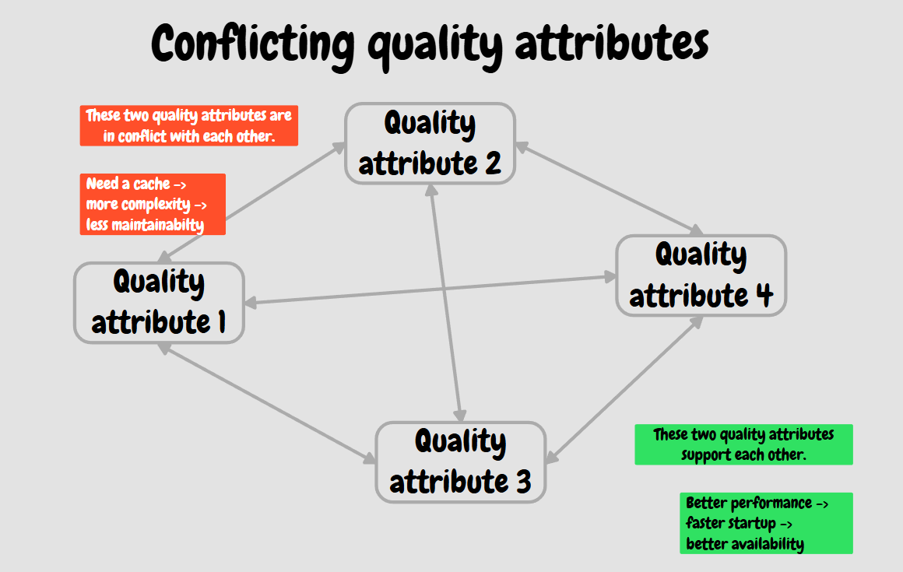
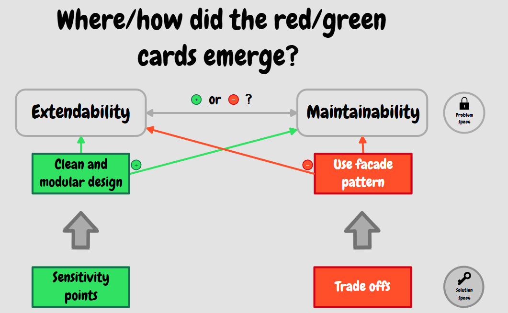
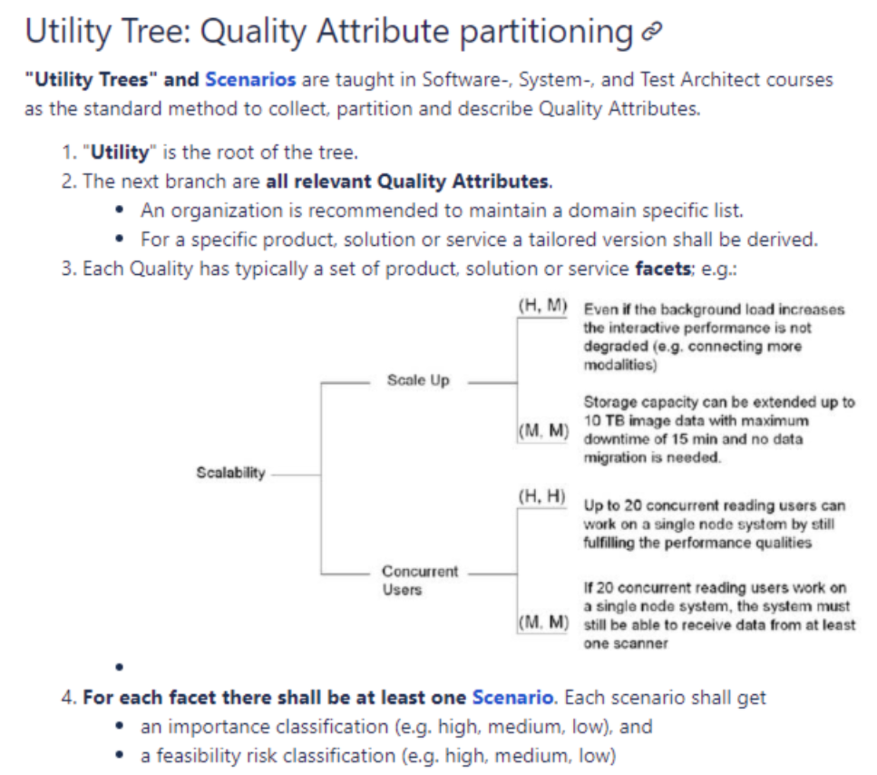
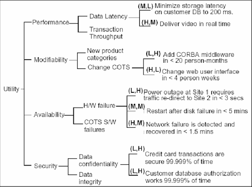
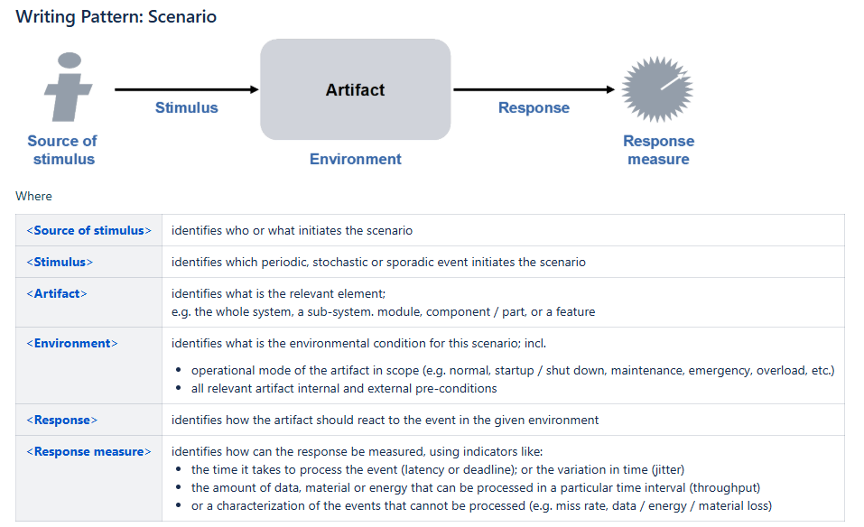
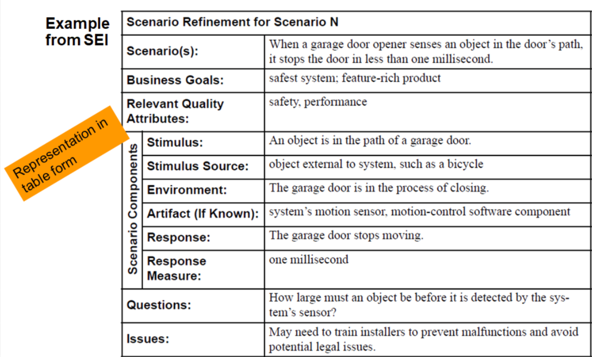

Role of the SWA and Quality Attributes
The architect's role here is irreplaceable. They must identify and prioritize NFRs.
Conflict resolution: The SWA must resolve conflicting requirements. Extreme security (encryption) reduces performance. The architect seeks a balance.


Negotiation: The architect's task is to "reconcile over-aggressive quality requirements." If the business demands system availability of "five nines" (99.999% = approx. 5 minutes of downtime per year), the SWA must quantify the extreme cost of such a solution (geographic redundancy, specialized hardware) and agree with the business on a realistic target.
#How to get Quality Attributes into projects
Business will not typically supply qualitative metrics on its own, or will only say "it must be fast and secure." The SWA must make these vague terms concrete.
- Product comparison / Customer visit: Observing how the system is used in the real world.
- 5 Whys method: Finding the real cause and need. (E.g., Customer: "We want to speed up the database." -> Why? "Search takes 10 seconds." -> Why? "Full-text is done on a relational table." -> Result: We need ElasticSearch, not a faster Oracle.)
#Quality Attribute Workshops (QAWs) and Scenarios
A Quality Attribute Workshop (QAW) is a structured, intensive, and collaborative method (workshop) focused on discovering, refining, and prioritizing non-functional requirements (NFRs), also known as system quality attributes (such as performance, security, availability, maintainability, and so on). QAW is a methodology from SEI (Software Engineering Institute) used for the early identification of NFRs through a workshop involving all stakeholders. It proceeds in 8 steps (Presentation, Business vision, Architecture plan, Driver identification, Scenario brainstorming, Consolidation, Prioritization, Refinement).
The workshop takes place in the following 8 steps:
- Presentation: Introducing the participants and the workshop's goals.
- Business vision: The customer or sponsor presents the project's business goals.
- Architecture plan: Presenting the current architecture design or plan.
- Driver identification: Finding the key architectural drivers that have the greatest influence on the system.
- Scenario brainstorming: Participants generate ideas for quality scenarios (here the architect typically uses the 5 Whys method to ask further questions about the actual needs).
- Consolidation: Grouping similar scenarios to eliminate duplicates.
- Prioritization: Selecting the scenarios most important to the business and the architecture.
- Refinement: Developing the priority scenarios into a detailed, measurable form.
A so-called Utility Tree is often used to classify the attributes discovered during the workshop, and the entire process results in a formal QAW Scenario.
#Utility Tree: classification of quality attributes
The Utility Tree and scenarios are a standard method used to identify, structure, and describe a system's quality attributes.
The root of the tree is "Utility".
The next level contains all relevant quality attributes.
It is recommended that the organization maintain a domain-specific list of these attributes.
A tailored variant is then derived from it for a specific product, solution, or service.
Each quality attribute usually contains a set of specific aspects of the product, solution, or service.
There should be at least one scenario for each such aspect. Each scenario should be rated according to:
- importance (for example, high, medium, low),
- feasibility risk (for example, high, medium, low).
Several different scenarios may need to be addressed in parallel.
There may also be alternative scenarios, for example:
- one describing the target state to be achieved,
- another describing a more ambitious variant that would represent an exceptional solution and outperform the competition.


Refinement using QAW Scenarios (Quality Attribute Scenarios):
A vague NFR ("the system will be secure") cannot be tested. The SWA converts the NFR into a specific scenario. The SWA must be able to construct a template with 6 parts:
- Source — Who/what triggered the action?
- Stimulus — What happened?
- Artifact — Which parts of the system does this concern?
- Environment — Under what conditions? (normal / overload)
- Response — How should the system react?
- Measure — How will we objectively measure the response?

Example of a concrete QAW scenario (Performance):
- Source: Unauthorized user (Hacker)
- Stimulus: Attempts a brute-force login attack (1,000 attempts per second).
- Artifact: Authentication service.
- Environment: Normal system operation.
- Response: The system identifies abnormal traffic, blocks the source IP address, and logs the incident to the security log.
- Measure: The IP is blocked within 3 seconds of the start of the attack and regular users experience no more than a 10% degradation in latency.
